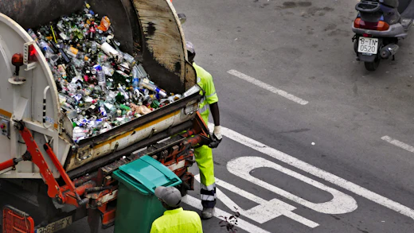
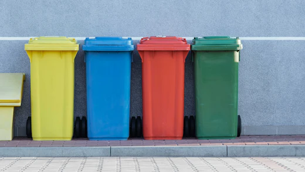
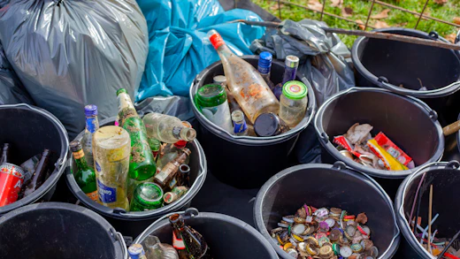
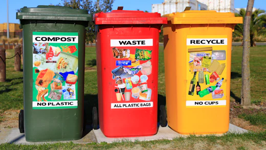
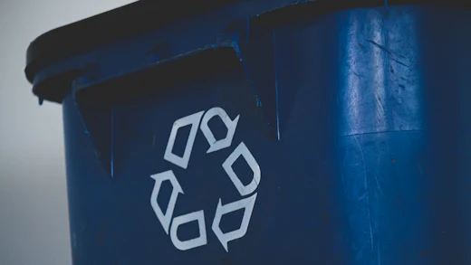

Tọa đàm: Phân loại rác tại nguồn – bắt đầu từ mỗi gia đình
Luật Bảo vệ môi trường năm 2020 yêu cầu mỗi hộ gia đình phân loại rác sinh hoạt ngay tại nguồn. Rác sau phân loại đi đâu, người dân cần làm gì và làm sao để việc này không dừng ở khẩu hiệu? Mời quý vị theo dõi tọa đàm cùng các khách mời.
- TS. Lương Thu Hà Chuyên gia quản lý chất thải rắn
- Ông Nguyễn Quang Vinh Đại diện đơn vị thu gom, vận chuyển rác
- Luật sư Đặng Minh Khôi Đoàn Luật sư tỉnh Thái Nguyên
- MC Minh Phương Dẫn chương trình
Luật Bảo vệ môi trường năm 2020 quy định hộ gia đình, cá nhân phải phân loại chất thải rắn sinh hoạt ngay tại nguồn. Quy định đã rõ, nhưng để việc phân loại trở thành thói quen hằng ngày vẫn còn nhiều việc phải làm, từ cách hướng dẫn người dân đến khâu thu gom, xử lý phía sau.
Xoay quanh câu chuyện này, Báo và Phát thanh, Truyền hình Thái Nguyên tổ chức tọa đàm “Phân loại rác tại nguồn – bắt đầu từ mỗi gia đình” với sự tham gia của TS. Lương Thu Hà, chuyên gia quản lý chất thải rắn; ông Nguyễn Quang Vinh, đại diện đơn vị thu gom, vận chuyển rác và Luật sư Đặng Minh Khôi, Đoàn Luật sư tỉnh Thái Nguyên. Chương trình do MC Minh Phương dẫn dắt.
Câu 1: Thưa TS. Lương Thu Hà, vì sao việc phân loại phải bắt đầu ngay trong mỗi gia đình, thay vì để đơn vị thu gom phân loại ở bãi tập kết?
MC Minh Phương hỏi
Vì rác chỉ còn giá trị khi chưa bị trộn lẫn. Một hộp sữa giấy, một chai nhựa nếu để riêng thì rửa sơ là bán được cho cơ sở tái chế. Nhưng khi đã nằm chung với cơm thừa, canh thừa, chúng bị bẩn, bị ướt và gần như không thể tách ra được nữa.
Phân loại ở bãi tập kết tốn kém hơn rất nhiều: cần nhân công, máy móc, mà làm kỹ đến đâu cũng không sạch bằng việc mỗi nhà bỏ đúng túi ngay từ đầu. Mấy giây trong căn bếp nhà mình tiết kiệm rất nhiều công sức ở cuối dây chuyền.
Theo các khách mời, điểm nghẽn hiện nay không chỉ nằm ở nhận thức của người dân mà còn ở sự đồng bộ giữa các khâu: rác đã được phân loại thì việc thu gom, vận chuyển cũng phải theo kịp.
Câu 2: Người dân hay phản ánh: nhà đã chia rác ra mấy túi nhưng xe thu gom lại đổ chung vào một thùng. Thực tế khâu thu gom đang diễn ra thế nào, thưa ông Nguyễn Quang Vinh?
MC Minh Phương hỏi
Tôi hiểu sự bức xúc đó. Bà con bỏ công phân loại mà thấy rác bị đổ chung thì rất dễ nản. Có những nơi phương tiện chưa kịp thay đổi, một xe phải chạy nhiều loại rác.
Chúng tôi đang chuyển dần sang thu gom theo lịch: rác hữu cơ thu hằng ngày, rác tái chế thu vào những ngày cố định trong tuần. Mỗi chuyến xe chỉ chở một loại nên rác không bị trộn lẫn. Lịch thu sẽ được dán ở nhà văn hóa tổ dân phố và gửi vào nhóm Zalo của khu dân cư.
Hướng dẫn cụ thể cho từng gia đình
Trong thời gian diễn ra tọa đàm, chương trình nhận được nhiều câu hỏi của bạn đọc, phần lớn xoay quanh những tình huống rất cụ thể trong sinh hoạt hằng ngày.
Câu 3: Nhà tôi ở chung cư, bếp nhỏ, không có chỗ ủ rác hữu cơ. Vậy tôi nên phân loại thế nào cho đơn giản mà vẫn đúng?
Câu hỏi của bạn đọc Hà Thị Lan
Chị chỉ cần nhớ ba nhóm. Thứ nhất là rác hữu cơ dễ phân hủy: thức ăn thừa, vỏ rau củ, bã chè. Thứ hai là rác tái chế được: giấy, bìa, chai lọ nhựa, lon kim loại. Thứ ba là phần còn lại.
Không cần ủ tại nhà. Rác hữu cơ chị cho vào một túi riêng, buộc kín và mang xuống điểm tập kết theo lịch thu. Rác tái chế nên rửa sơ, ép dẹp chai và hộp cho gọn. Riêng pin, bóng đèn hỏng, lọ thuốc thì để riêng và mang đến điểm thu gom chất thải nguy hại khi có đợt thu.
Bên cạnh hướng dẫn, không ít ý kiến quan tâm đến chế tài khi hộ gia đình không thực hiện, cũng như quyền của người dân khi đã phân loại đúng mà rác vẫn bị thu gom lẫn lộn.
Câu 4: Thưa luật sư Đặng Minh Khôi, nếu hộ gia đình không phân loại rác thì có bị xử lý không? Và người dân có quyền gì khi rác đã phân loại lại bị thu gom không đúng?
MC Minh Phương hỏi
Luật Bảo vệ môi trường năm 2020 coi phân loại chất thải rắn sinh hoạt là nghĩa vụ của hộ gia đình, cá nhân. Không phân loại có thể bị xử phạt vi phạm hành chính theo quy định của Chính phủ trong lĩnh vực bảo vệ môi trường. Luật cũng cho phép đơn vị thu gom từ chối nhận rác của hộ không phân loại hoặc không dùng bao bì đúng quy định.
Ở chiều ngược lại, rác đã phân loại thì phải được thu gom, vận chuyển sao cho không bị trộn lẫn trở lại. Nếu thấy điều đó không được bảo đảm, bà con hoàn toàn có thể phản ánh với chính quyền cơ sở để kiểm tra.
Để công sức phân loại không bị lãng phí
Một băn khoăn chung của nhiều gia đình là rác sau khi phân loại sẽ được xử lý ra sao, có xứng với công sức bỏ ra hay không.
Câu 5: Rác tái chế và rác hữu cơ sau khi phân loại sẽ đi về đâu? Liệu công sức của người dân có bị lãng phí?
MC Minh Phương hỏi
Rác tái chế được chuyển cho các cơ sở thu mua phế liệu; giấy, nhựa, kim loại mỗi loại có đầu ra riêng. Rác hữu cơ đưa về khu xử lý để làm phân bón. Chỉ phần còn lại mới phải chôn lấp hoặc đốt.
Tôi muốn nói thêm: người dân chỉ giữ được thói quen khi thấy công sức của mình có ý nghĩa. Vì vậy, công khai rác đã phân loại đi đâu, được xử lý ra sao cũng quan trọng không kém việc hướng dẫn cách phân loại.
Các khách mời cùng cho rằng phân loại rác chỉ bền vững khi trở thành nếp quen của cả cộng đồng, chứ không dừng ở những đợt ra quân.
Câu 6: Để phân loại rác trở thành thói quen chứ không chỉ là phong trào, theo các vị, cần bắt đầu từ đâu?
MC Minh Phương hỏi
Từ những việc rất nhỏ và lặp lại hằng ngày. Ở nhiều nơi, chính các cháu học sinh về nhắc ông bà, bố mẹ bỏ rác đúng túi. Trường học, tổ dân phố, hội phụ nữ là những nơi lan tỏa thói quen nhanh nhất.
Song song với vận động là sự nhất quán. Quy định đã ban hành thì cần được thực hiện đều đặn, công bằng với mọi hộ và có hướng dẫn rõ ràng. Khi ai cũng làm, làm đúng thì được ghi nhận, thói quen sẽ tự hình thành.
Khép lại tọa đàm, các khách mời cùng nhấn mạnh: mỗi túi rác được bỏ đúng chỗ là một phần việc làm sạch nơi chúng ta đang sống.
Nhóm phóng viên
Gửi câu hỏi tới khách mời
Ban biên tập sẽ tổng hợp và chuyển câu hỏi của bạn tới các khách mời.
Đã gửi câu hỏi
Ban biên tập đã nhận câu hỏi và sẽ chuyển tới các khách mời.
Tin bài khác

Thu gom rác theo lịch: Những điều người dân cần biết
Rác hữu cơ thu hằng ngày, rác tái chế thu vào ngày cố định trong tuần. Nắm rõ lịch thu giúp mỗi gia đình bỏ rác đúng lúc, đúng chỗ.

Ba nhóm rác sinh hoạt và cách phân loại đơn giản tại nhà
Rác hữu cơ, rác tái chế và phần còn lại: cách nhận biết từng nhóm và chuẩn bị túi đựng phù hợp cho căn bếp nhỏ.

Chai nhựa, vỏ lon nên rửa sơ, ép dẹp trước khi bỏ vào túi tái chế
Một thao tác nhỏ giúp rác tái chế sạch hơn, gọn hơn và dễ được cơ sở thu mua tiếp nhận.

Thùng rác phân loại ở khu dân cư: Dùng sao cho đúng?
Mỗi màu thùng dành cho một nhóm rác. Bỏ nhầm thùng khiến cả túi rác đã phân loại bị trộn lẫn trở lại.

Rác tái chế đi đâu sau khi rời khỏi mỗi gia đình?
Từ điểm tập kết đến cơ sở thu mua phế liệu, giấy, nhựa và kim loại mỗi loại có một hành trình xử lý riêng.